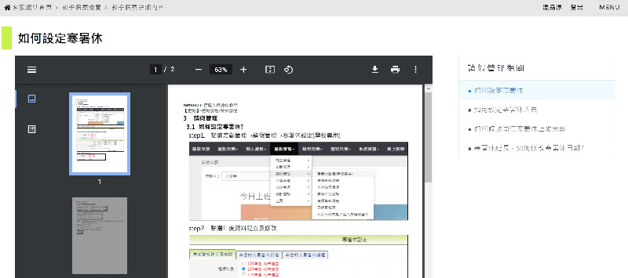

文件標籤系統功能前後台開發
2021/7
前後台 wireframe密碼：uniong-
依據客服網站重要公告同步教學個案作法，能在教學文件清單頁有對應的依循規則。
負責項目
現況分析
- 教學文件頁面切換事件數量比例偏低，僅佔網站總事件1％
- 教學文件頁面離覽時間低於5秒的情況明顯佔多數，此行為需進行改善增加瀏覽時間以及減少低於5秒的比例。
- 重要公告為特殊事件以及跨功能操作的指引，但因以功能切分的方式無法有一定的準則提供使用者依循，需要解決無法提供教學文件的情況。
產品功能企劃
- 建立標籤系統，增加教學文件關聯性。
- 新增正規化欄位，管理與設定標籤。
- 移除上下則切換教學文件功能，以標籤版位取代，能提供更多指引順序。
- 跨功能重要公告可依據功能切分，並增加對應標籤內容，串連唯一整份完整操作內容教學。
功能特點
- 切分時程先以前台上線為優先，提供更多關聯內容參考，達成上述設定目標數據。
- 上架方式可以SQL新增，排定後台功能開發。
- 單一教學文件可設定多組標籤對應，提供關聯性內容指引。
頁面示意
- 標籤功能版位

- 標籤功能版位
開發成果
- 2021/7/29 上線